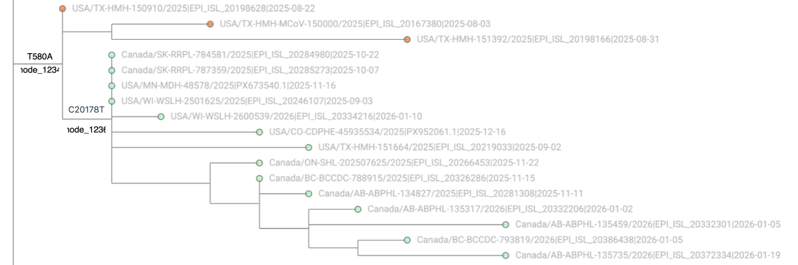

Fixing Problems Manually¶
Build-level fixes like filtering out categories of sequences or masking mutations on branches are very big hammers; sometimes all that is needed is a little surgical, temporary pruning of a small number of sequences, followed by re-optimization of the tree to get a branch moved into the desired place. That allows the pruned sequences to be added back to the tree in the next daily build, and usually the branch remains in place. In other situations, pruning sequences and re-optimizing doesn't do the trick, but we can force a branch move. The summary.tsv file in this repository lists manual interventions in the tree structure, with the detailed records in files under the notes/ directory.
Pruning and re-optimization¶
The most common manual intervention by far is to prune sequences that anchor a branch in which
we believe the mutations are out of order, and then reoptimize the tree in order to change the
placement.
Consider the example in the figure below, showing a branch with mutation T580A and its child
branch with mutation C20178T, with leaves colored by allele at position 20178 to highlight
the child branch:

In that configuration, the mutations appear to be happening in the order T580A > C20178T.
Now, say that the lineage hunters are interested in a sibling branch that has C20178T
(without T580A). They have reasons to believe that the sequences with both T580A and
C20178T are descended from the sequences with only C20178T, and the sequences that have
only T580A are either erroneous (for example, having an N base at position 20178) or are
unrelated, and the mutation T580A is the one that happened twice, not the mutation C20178T.
The lineage hunters file a github issue asking for the child branch with both mutations to be
moved to the C20178T branch, so that the mutations will appear in the order C20178T > T580A.
To effect that change, we can follow these steps
(most of the files in the notes directory of this repo do something like this; make a
new file named after the date like YY_MM_DD_treeWork.txt to record your work similarly):
- Make a sample-paths file from the daily tree. If I will only be working on branches under a specific lineage such as JN.1, I can reduce the size of the file by restricting it to that lineage.
- Make a text file that lists the sequences to be pruned; in the example above, those are the
three orange sequences with
T580Abut notC20178T. To do that, I usually select a leaf node from the base of the child branch in Taxonium and copy its name. In the example, I'll pick the top green leaf and copy "Canada/SK-RRPL-784581/2025", grep for that path in the sample-paths file, and look for the node_IDs corresponding to the nodes of interest: the branch that we don't like and the child that we want moved. (output below is excerpted, and node IDs changed, to highlight the nodes of interest)The sequences to be pruned are the sequences that are descended fromgrep Canada/SK-RRPL-784581/2025 sample-paths Canada/SK-RRPL-784581/2025|EPI_ISL_20284980|2025-10-22 ... node_1234:T580A node_1236:C20178Tnode_1234but not fromnode_1236. So we use grep and cut to make a file of only the sequences to be pruned: Repeat this step, making differentpruneFor*files, if there are other misplaced branches that we want to move this way. - Do the pruning:
- Optimize the pruned tree: Using -M 2 tells matOptimize not to take more than 2 hours. It usually completes in 90 to 100 minutes.
- matOptimize often leaves behind some extra mutationless nodes that can mess up downstream
tools. Remove them by running
matUtils extract -O: - We want the pruned and re-optimized tree to be used as the basis for the next day's daily build. Make a link to a file that the daily build process looks for:
- Start a background job to make a Taxonium file of the pruned and optimized tree in case
the branch is not moved as expected and we want to inspect. Note that this command assumes
that you have a ~/github/taxonium clone of the repo theosanderson/taxonium. If you don't
have that already then
mkdir -p ~/github && pushd ~/github && git clone https://github.com/theosanderson/taxonium.git && popdbefore running this:usher_to_taxonium --input gisaidAndPublic.$today.pruned.opt.O.pb.gz \ --metadata gisaidAndPublic.$today.metadata.tsv.gz \ --genbank ~/github/taxonium/taxoniumtools/test_data/hu1.gb \ --columns genbank_accession,country,date,pangolin_lineage,pango_lineage_usher \ --clade_types=nextstrain,pango \ --name_internal_nodes \ --title "$today tree after prune & opt" \ --output gisaidAndPublic.$today.treeWork.jsonl.gz \ >& utt.log & - While that is running, extract a sample-paths file from the pruned and optimized tree so we
can grep for the new path of the child branch and compare it to our expectations. Recall that
we want to see the order of mutations
C20178T > T580A. That's what it looks like when it was moved as expected. Sometimes, for child nodes that have multiple mutations, a branch with some other mutation could attract it during matOptimize. If the new path doesn't match your expectations, viewing in Taxonium can be helpful. - You were recording all of the above commands, and the important bits of their output,
in a file like YY_MM_DD_treeWork.txt, right? Copy that file into the
notesdirectory of this repository, add a line to summary.tsv,git addthe new file and summary.tsv, and commit them with a note that you did some pruning and reoptimizing on this day.
In the next daily build, the pruned sequences will be added back to the tree. If they were only missing the moved-child/target-branch mutation because of an N at that position, they might even have that mutation inferred and be placed on the moved-child branch. If not, they'll be placed right back where they were, and if we're unlucky, matOptimize may move the child branch back to its original undesired position and we'll have to fix it again. If that happens repeatedly then it's worth a little extra time to add the offending sequences to the list of permanently excluded sequences.
Forcing a branch move¶
Pruning and re-optimizing doesn't work in every case.
Sometimes the parent branch is a designated lineage and the child branch is a relatively small
part of it; in that case it's not desirable to prune a whole lineage branch just to move a small
misplaced child branch.
A common cause of that situation is a recurrent advantageous mutation.
In some SARS-CoV-2 variants and on some population immunity backgrounds, a particular Spike
mutation might confer a significant growth advantage.
When transmission is high, that Spike mutation could happen multiple times by chance, and each
time lead to increased transmission and more detections by surveillance sequencing.
The correct tree structure in that case would have many occurrences of the Spike mutation,
often following other mutations.
However, maximum parsimony would favor a tree structure that has the Spike mutation occurring
only once, followed by the other mutations.
Sometimes an advantageous Spike mutation forms a branch with multiple child branches whose
mutations are the defining mutations of different lineages.
This leads to the appearance of a "mini" version of the parent lineage.
Astute observers of the virus's evolution know that it's more likely for the Spike mutation to occur multiple times in the tree than other random mutations that may come to define lineages based on luck (high general transmission and/or success of the parent lineage). But again, maximum parsimony has no concept of some mutations being more likely to occur than others.
When pruning isn't applicable, we can resort to forcing a branch move using
matUtils mask --move-nodes,
and hoping that the move doesn't subsequently get reversed by matOptimize.
Here are the steps to forcing a move.
-
Make a sample-paths file (if you haven't already, for pruning fixes above). If all of the branches that you will be working with are descendants of some lineage, for example JN.1, then restrict the file to that lineage.
-
In Taxonium, note the name of a sequence near the base of the branch to be moved, and the name of a sequence near the intended new parent branch. For this example, let's say
USA/NJ-CDC-LC1128576/2025is on the base of the branch to be moved andUSA/CT-DPH-1276947001/2025is on the base of the target parent branch. -
Use the sample names to find the branch node IDs (at the end of the paths; showing excerpts here because the paths are long):
-
Make a tab-separated file with the node to be moved in the first column and the target parent node in the second column:
If you need to apply multiple force-moves, repeat from step 2 and append new lines to the end offorceMove.tsv. -
If there is no pruning to be done today, then you only need to run one more command to make the move(s) and make a new tree file for use in the next daily build:
If there is also pruning to be done, then do the force-move first because it depends on node IDs which change after pruning (or any structural change to the tree). Pruning uses sample names not node IDs, so it can be done as a second step after the force-move:$matUtils mask --move-nodes forceMove.tsv \ -i gisaidAndPublic.$today.masked.pb.gz \ -o gisaidAndPublic.$today.masked.useMe.pb.gzAfter pruning, do the steps in the previous section starting with "Optimize the pruned tree".# Force-move first since it depends on node IDs $matUtils mask --move-nodes forceMove.tsv \ -i gisaidAndPublic.$today.masked.pb \ -o gisaidAndPublic.$today.masked.forceMove.pb.gz # Now prune the force-moved tree: $matUtils extract -i gisaidAndPublic.$today.masked.forceMove.pb.gz \ -p -s <(sort -u pruneFor*) \ -O -o gisaidAndPublic.$today.pruned.pb.gz